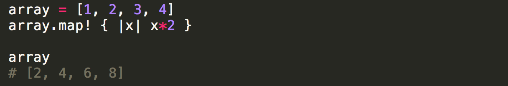
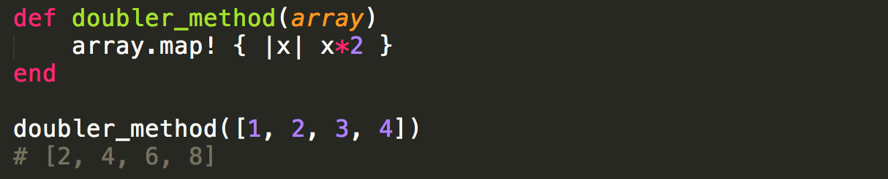
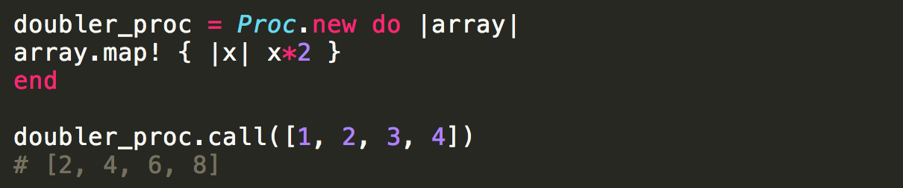
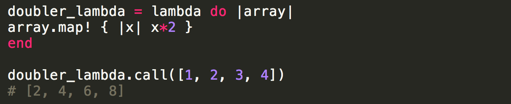
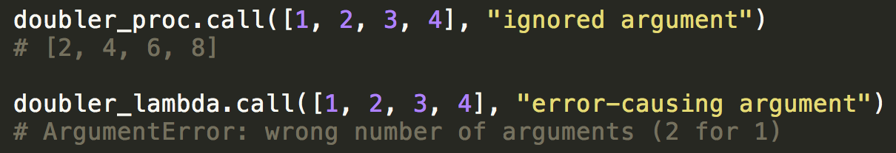
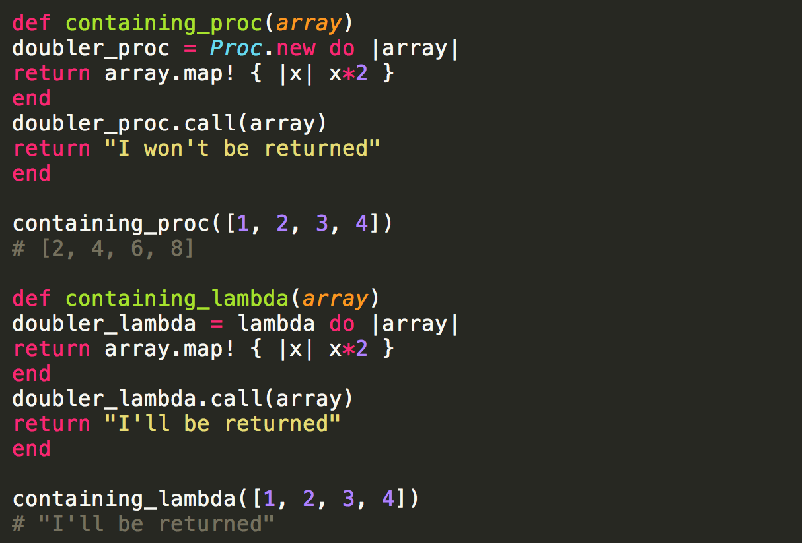

Blocks, methods, procs, and lambdas are all related concepts in Ruby. The following is an overview of their similarities, differences, and respective applications.
Blocks, Methods, Procs, and Lambdas
Blocks
A block of code is just a procedural series of steps. It is not an object. The following is a block of code that creates a variable called "array" and maps the array to double each item within it.
Methods
Methods are defined within classes and can be called by objects. They are not themselves, objects. They hold blocks of code. The following method contains the block of code from the previous example.
Procs and Lambdas
Procs and lambdas are objects that hold blocks of code. Because they are objects, they are invoked using a method, ".call". Procs and lambdas are similar, but not the same. In the following simple example, they function identically to perform the same function as our last example's method. Note that the proc is created with Proc.new, which creates a new instance of the Proc (short for procedure) class. The creation of a Proc instance can also be performed by the lambda method, a globally available method. However, as will be shown, lambda does more than just execute Proc.new.
  Proc vs Lambda Argument QuantityWhen calling a proc, the call will ignore any inputs in excess of the required input quantity. Below, our previously created doubler_proc is called with two arguments, where the proc was only designed to take one. The first argument is used, and the second is ignored. On the other hand, when doubler_lambda is called two arguments, an error results. Lambdas must be called with exactly the number of arguments they were defined to accept.
 Proc vs Lambda ReturnProcs and lambdas also have differing effects from one another when contained inside of methods. After a proc is called from inside of a method, the method is exited without anything after the proc call being returned. When a lambda is called from within a method, the code following the lambda call within the method is executed normally. Below, we see that when our doubler_proc is within the method containing_proc, the text below the proc call is not returned. However, when doubler_lambda is called from within the method containing_lambda, the text following the lambda call is returned.
